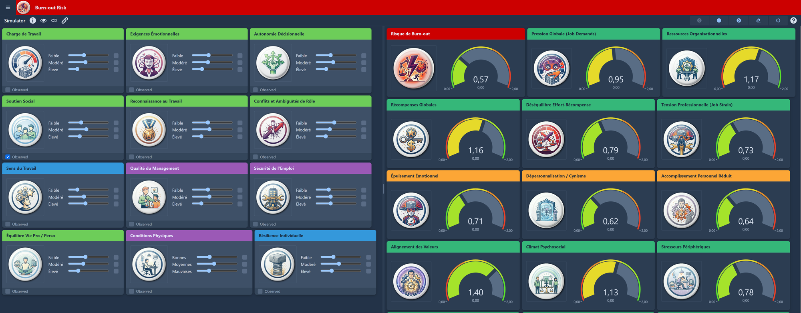

Turnover · Absentéisme · Risques psychosociaux · Fidélisation · Intégration
Vos indicateurs RH bougent rarement pour une seule raison. Noumensia identifie les facteurs qui pèsent le plus — pour savoir où concentrer vos moyens.
Noumensia construit des modèles qui représentent les dizaines de facteurs qui influencent un indicateur RH et la façon dont ils interagissent. Résultat : vous voyez quels leviers pèsent le plus dans votre contexte, et vous pouvez comparer des scénarios d'action avant de décider.
Une approche conçue pour les directions RH, dirigeants et cabinets de conseil RH.

Des situations que vous reconnaissez peut-être
Trois questions concrètes, et comment un modèle aide à y répondre
« Pourquoi le turnover est-il plus élevé dans cette équipe que dans une équipe comparable ? »
Le modèle compare les profils des deux équipes sur l'ensemble des facteurs renseignés — charge de travail, ancienneté, qualité du management perçue, rémunération relative — et classe ceux qui correspondent le mieux à l'écart observé. Au lieu d'une intuition isolée, vous obtenez une hiérarchie de contributions.
« L'absentéisme reste élevé malgré nos actions. Qu'est-ce qu'on rate ? »
Peut-être que les facteurs sur lesquels vous avez agi ne sont pas ceux qui pèsent le plus dans votre contexte. Le modèle peut révéler que la charge de travail, l'organisation ou le management de proximité jouent un rôle plus important que ce que vos indicateurs habituels laissaient voir.
« Avant de lancer un plan d'action RPS, sur quoi concentrer nos moyens ? »
Plutôt que de disperser vos efforts et votre budget en essayant de traiter tous les facteurs de risque avec la même intensité, le modèle hiérarchise les facteurs selon leur contribution estimée aux indicateurs que vous suivez — pour concentrer vos ressources là où elles auront le plus d'impact.
Ce que vous obtenez
Un modèle que vous pouvez interroger, pas un rapport figé
Un tableau de bord montre qu'un indicateur a bougé. Une enquête produit des scores d'engagement ou de stress. Mais ni l'un ni l'autre ne dit quels facteurs contribuent à quoi — ni lequel traiter en priorité. La modélisation probabiliste comble cet écart : elle relie ces variables dans un même cadre, rend les relations entre facteurs visibles et discutables, et permet de tester des hypothèses directement sur vos données.
Un modèle sur-mesure
Le modèle est alimenté par trois sources : vos données RH existantes (extraits SIRH, résultats d'enquêtes, indicateurs de suivi), votre connaissance du terrain, et la littérature scientifique qui structure les hypothèses. Leur poids respectif dépend de ce dont vous disposez : plus vos données sont riches, plus le modèle s'y ancre ; à défaut, l'expertise et la littérature prennent le relais — et la part de chacune est explicitée, jamais masquée. Ce qui en sort est propre à votre organisation et votre situation, pas calqué sur une grille standard.
Des scénarios que vous pouvez comparer avant de décider
Plutôt que d'arbitrer entre plusieurs plans d'action sans base commune, vous les testez directement sur le modèle. Il indique ce qui devient plus ou moins probable selon le levier activé — une base argumentée pour décider, pas une prédiction certaine. La page Méthode précise les hypothèses sous lesquelles ces comparaisons sont valides.
Un livrable conçu pour circuler
Vous recevez le modèle interactif, un simulateur de scénarios accessible via navigateur, les résultats commentés, et une restitution conçue pour être partagée en comité de direction ou avec le CSE.

En pratique
Un travail collaboratif, à partir de ce que vous avez déjà
L'approche s'adresse en priorité aux directions RH d'entreprises de plus de 200 salariés et aux cabinets de conseil RH qui veulent enrichir leurs diagnostics.
La construction du modèle part de données que vous collectez déjà (extraits SIRH, résultats d'enquêtes, indicateurs de suivi) et celles collectées pendant la mission. Le travail respecte les exigences du RGPD, et les échanges sont couverts par un accord de confidentialité dès la première réunion.
La démarche commence par un entretien de cadrage — sans engagement — pour vérifier si l'approche est adaptée à votre situation et définir un premier périmètre, volontairement resserré, sur lequel démontrer la valeur avant d'élargir. Le travail de modélisation prend ensuite typiquement 4 à 8 semaines selon la disponibilité des données et la complexité du sujet.